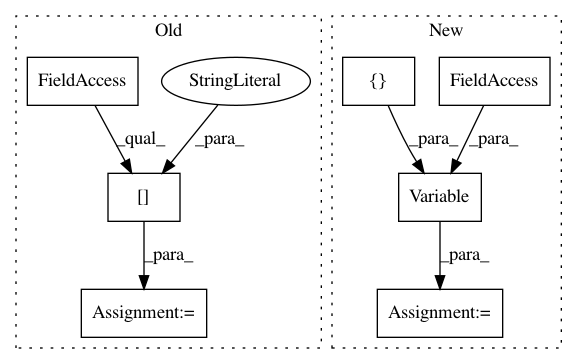

acea25b91cedae9c9fd1ed9f7667a86565e2eac9,official/vision/detection/executor/detection_executor.py,DetectionDistributedExecutor,__init__,#DetectionDistributedExecutor#Any#Any#,36
Before Change
trainable_variables_filter=None,
**kwargs):
super(DetectionDistributedExecutor, self).__init__(**kwargs)
params = kwargs["params"]
if predict_post_process_fn:
assert callable(predict_post_process_fn)
if trainable_variables_filter:
assert callable(trainable_variables_filter)
After Change
assert callable(trainable_variables_filter)
self._predict_post_process_fn = predict_post_process_fn
self._trainable_variables_filter = trainable_variables_filter
self.eval_steps = tf.Variable(
0,
trainable=False,
dtype=tf.int32,
synchronization=tf.VariableSynchronization.ON_READ,
aggregation=tf.VariableAggregation.ONLY_FIRST_REPLICA,
shape=[])
def _create_replicated_step(self,
strategy,
model,
In pattern: SUPERPATTERN
Frequency: 3
Non-data size: 7
Instances
Project Name: tensorflow/models
Commit Name: acea25b91cedae9c9fd1ed9f7667a86565e2eac9
Time: 2020-02-18
Author: gardener@tensorflow.org
File Name: official/vision/detection/executor/detection_executor.py
Class Name: DetectionDistributedExecutor
Method Name: __init__
Project Name: mil-tokyo/webdnn
Commit Name: ce21b4ee85ad492be118639e7f9b45c611349ecb
Time: 2017-04-19
Author: hidaka@mi.t.u-tokyo.ac.jp
File Name: src/graph_builder/graph/operators/average_pooling_2d.py
Class Name: AveragePooling2D
Method Name: __call__
Project Name: mil-tokyo/webdnn
Commit Name: ce21b4ee85ad492be118639e7f9b45c611349ecb
Time: 2017-04-19
Author: hidaka@mi.t.u-tokyo.ac.jp
File Name: src/graph_builder/graph/operators/max_pooling_2d.py
Class Name: MaxPooling2D
Method Name: __call__